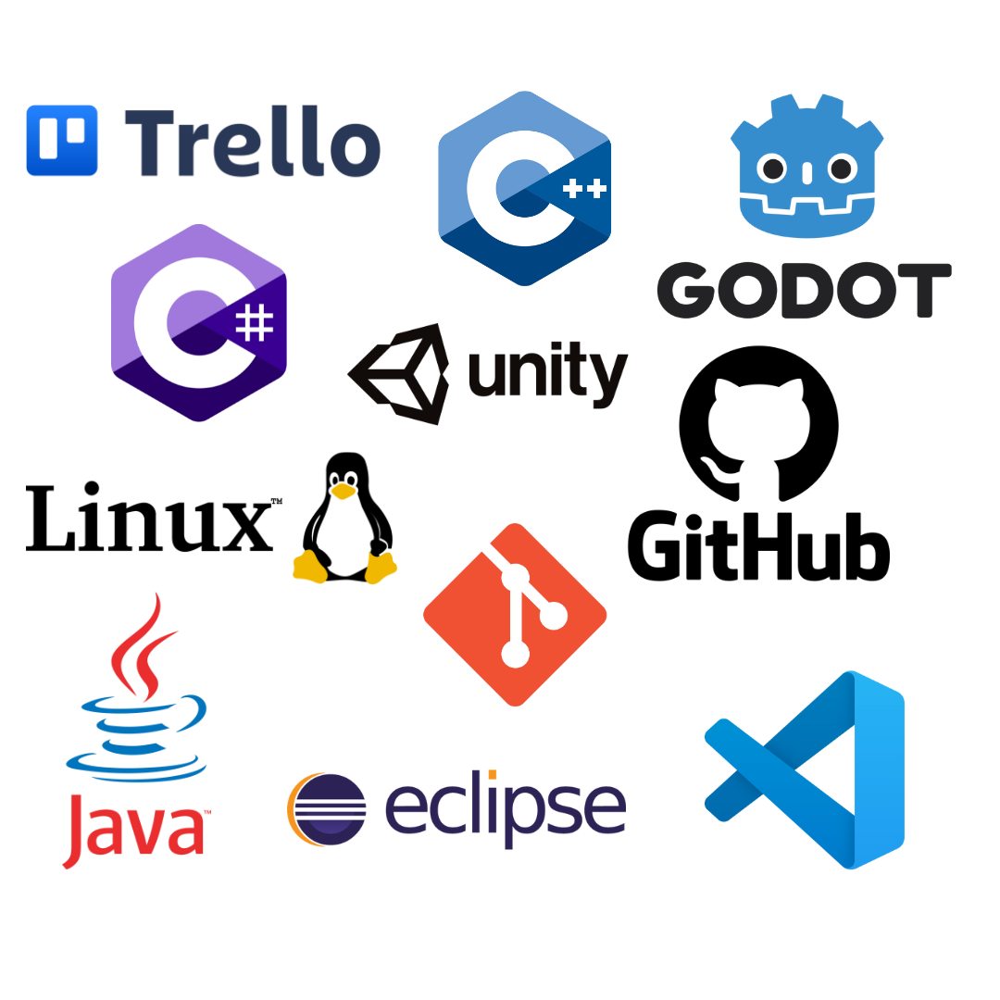

Je m'appelle Thomas Dumont. Après un bac pro Systèmes Numériques obtenu au lycée Robert Garnier à La Ferté-Bernard, je poursuis actuellement mes études en BTS Services Informatiques aux Organisations (option SLAM : Solutions Logicielles et Applications Métier) à l'ESUPEC de Cholet. Ce portfolio est à la fois un moyen de développer mes compétences en développement web et de répondre aux exigences de mon parcours. Vous y découvrirez mes compétences, mes projets, et mes objectifs dans le domaine du numérique. Bonne visite !
J’ai toujours été passionné par l’univers du numérique. Ce domaine m’intrigue par sa richesse et sa diversité, et il me pousse constamment à découvrir de nouvelles choses. J’ai choisi cette formation en BTS SIO option SLAM parce qu’elle me permet de combiner deux aspects que j’apprécie particulièrement : résoudre des problèmes complexes et créer des solutions concrètes.
Ce que j’aime dans le code, c’est la liberté qu’il offre. Les possibilités semblent infinies, et chaque ligne de code peut donner vie à une idée ou à un projet. Coder, c’est à la fois relever des défis techniques et voir ses idées prendre forme de manière tangible.
À terme, je me vois évoluer comme développeur applicatif ou développeur de jeux vidéo, deux métiers qui me permettraient de lier créativité et technique tout en continuant à apprendre et à innover.

En savoir plus sur mon travail
Je présente ici mes compétences et les projets sur lesquels j’ai travaillé. Cela donne un aperçu de mon approche et des technologies que j’utilise.